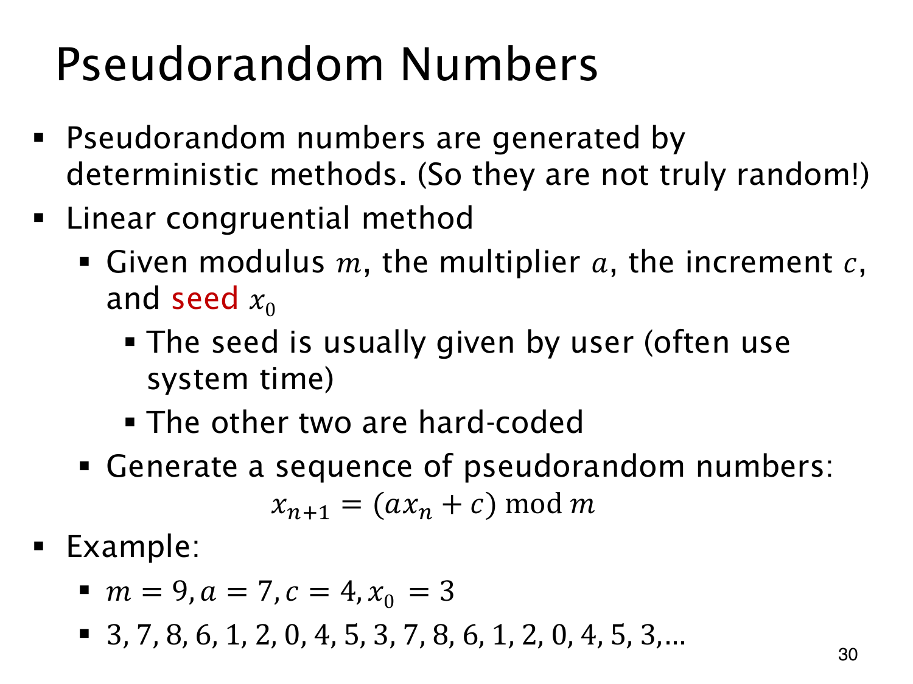

L1.12 · 第 30 页讲解原文
查看这一页课件

确定的递推怎样生成伪随机数
线性同余法从 seed（种子）x0 出发，反复计算
xn+1=(axn+c)modm.
m 是模数，a 是乘数，c 是增量；取模让每个状态留在 0,…,m−1。程序可以固定这些参数，由用户给种子，也常用系统时间决定起点。原页写“other two”，但公式中除种子外实际有 m,a,c 三个参数。
取 m=9,a=7,c=4,x0=3，前三次计算为 25mod9=7、53mod9=8、60mod9=6。继续得到
3,7,8,6,1,2,0,4,5,3,…
第九步回到 3，后面便会重复此前的计算，因此周期为 9，恰好经过全部状态。其他参数未必能给出这么长的周期。
这也解释了 pseudorandom（伪随机）：规则是确定的，同参数、同种子必得同序列。有限状态又保证序列最终循环；即使周期很长，也不等于真正随机或难以预测。用系统时间作种子只改变起点，不改变公式的确定性。